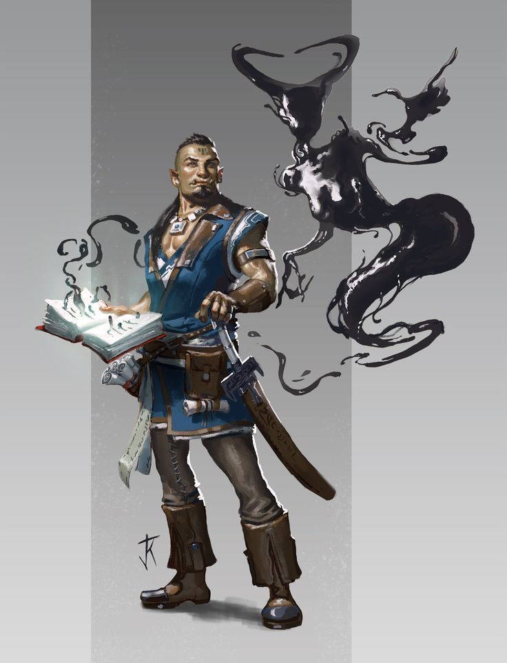

Glog
Personnage¶
Race : Orque
Classe : Occultiste
Niveau : 1 (BM +2)
Points de vie : 11
Vitesse : 30 ft.
| FOR | DEX | CON | INT | SAG | CHA |
|---|---|---|---|---|---|
| 10 (±0) | 12 (+1) | 16 (+3) | 14 (+2) | 14 (+2) | 16 (+3) |
| ◎ ±0 | ◎ +1 | ◎ +3 | ◎ +2 | ◉ +4 | ◉ +5 |
| Compétences | |
|---|---|
| ◎ Acrobaties (Dex) : +1 | ◉ Investigation (Int) : +4 |
| ◉ Arcanes (Int) : ±4 | ◎ Médecine (Sag) : +2 |
| ◎ Athlétisme (For) : ±0 | ◎ Nature (Int) : +2 |
| ◎ Discrétion (Dex) : +1 | ◎ Perception (Sag) : +2 |
| ◎ Dressage (Sag) : +2 | ◎ Persuasion (Cha) : +3 |
| ◎ Escamotage (Dex) : +1 | ◉ Religion (Int) : +4 |
| ◉ Histoire (Int) : +4 | ◎ Représentation (Cha) : +3 |
| ◎ Intimidation (Cha) : +3 | ◎ Survie (Sag) : +2 |
| ◎ Intuition (Sag) : +2 | ◎ Tromperie (Cha) : +3 |
Fiche récapitulative pour ceux qui ont la flemme (Merci Gemini !)
Vous êtes Glog, un brillant étudiant orque en magie qui, par accident de recherche, est devenu le relais d'une gelée cosmique mangeuse de souvenirs, vous forçant à partir à l'aventure pour "nourrir" votre patron avec de nouvelles expériences afin de passer vos examens.
Objectif pour la session :
Vous êtes en "recherche sur le terrain" pour votre thèse. Votre but est de documenter méticuleusement tout ce que vous rencontrez – créatures, lieux, événements – pour compiler des données pour vos études, et accessoirement, pour offrir de nouvelles "saveurs" à la Convocation Gélatineuse qui vous prête ses pouvoirs.
Parlez comme un Professeur Orque : Utilisez un langage académique et complexe qui contraste avec votre apparence d'orque. Analysez tout de manière théorique ("Hypothétiquement...", "Empiriquement...") et citez des références historiques obscures que personne d'autre ne connaît.
La Connaissance avant Tout : Votre grimoire/carnet de notes est votre meilleur ami. Sortez-le constamment pour prendre des notes, même dans les moments les plus inopportuns. Votre défaut est clair : vous êtes facilement distrait par la promesse d'une nouvelle information, même si c'est au milieu d'un combat.
Jouez la Double Mémoire : Laissez parfois échapper des informations ou des souvenirs qui ne sont pas les vôtres (un écho de la Convocation Gélatineuse). Un mot dans une langue ancienne, le nom d'un roi oublié... puis reprenez-vous avec un air confus, comme si vous ne saviez pas d'où cela venait.
Maîtrises¶
Armure : Armures Légères
Armes : Armes Simples
Outils :
Langues : Commun, Orque, Draconique, Nain
Description¶
Âge : 22 ans
Taille : 1,90 m
Poids : 110 kg
Glog est une présence qui détonne dans les couloirs d'une académie de magie. C'est un orque dans toute sa splendeur, avec une carrure large et une constitution qui semble taillée pour encaisser les coups, même s'il n'a pas la musculature hypertrophiée d'un barbare. Sa peau a une teinte olivâtre, et son visage, aux traits anguleux et à la mâchoire puissante, est marqué par de petites défenses inférieures qui dépassent de ses lèvres.
Ses cheveux noirs sont coiffés en un mohawk audacieux, les côtés de son crâne étant rasés et ornés de tatouages complexes qui descendent le long de sa tempe. Son regard est vif, intelligent et porte une lueur de curiosité insatiable, contrastant avec l'expression de concentration qu'il arbore souvent, un petit cigare ou un bâtonnet à mâcher nonchalamment coincé au coin de la bouche.
Loin des peaux de bêtes et des armures de plaques grossières, sa tenue est celle d'un étudiant pragmatique et d'un aventurier. Il porte une tunique bleue sans manches par-dessus une chemise de lin clair, des brassards de cuir robustes, et un pantalon sombre et résistant rentré dans des bottes de marche solides. Une large ceinture de cuir soutient une sacoche remplie de parchemins et de composants, ainsi qu'une épée courte à la garde simple, plus un outil de défense qu'une arme de prédilection.
Mais ce qui le définit vraiment, c'est la manifestation de son étrange pouvoir. Il tient souvent à la main un lourd grimoire, dont les pages, lorsqu'il les consulte, brillent d'une lumière éthérée. De ce livre et parfois de l'air autour de lui, des vrilles d'une substance noire, visqueuse et gélatineuse semblent suinter dans la réalité. Cette émanation de la Convocation Gélatineuse ondule et flotte autour de lui, formant des silhouettes amorphes et changeantes, véritable incarnation de sa soif de souvenirs.

Aptitudes¶
Aptitudes de Race¶
Vision dans le Noir. Vous pouvez voir à 60 ft. (18m/12 cases) dans une zone de lumière faible comme vous verriez avec une lumière vive, et dans le noir comme avec une lumière faible. Vous ne pouvez pas discerner les couleurs dans l'obscurité, seulement les nuances de gris.
Montée d'Adrénaline. Vous pouvez utiliser votre bonus action pour Courir. Vous pouvez utiliser ce trait un nombre de fois égal à votre bonus de maîtrise, et vous récupérez les utilisations dépensées lorsque vous terminez un repos long. Lorsque vous utilisez ce trait, vous gagnez un nombre de points de vie temporaires égal à votre bonus de maîtrise.
Carrure Imposante. Vous êtes considéré comme d'une catégorie de taille supérieure pour déterminer votre capacité de charge.
Endurance Sans Fin. Lorsque vous êtes réduit à 0 point de vie mais ne mourez pas sur le coup, vous pouvez tomber à 1 point de vie à la place. Une fois que vous avez utilisé ce trait, vous ne pouvez le refaire avant d'avoir terminé un repos long.
Aptitudes de Classe¶
Patron d'un Autre Monde¶
Vous avez conclu un marché avec la Convocation Gélatineuse.
Les sorts suivants sont ajoutés à votre liste de sorts :
| Niveau de sort | Sorts |
|---|---|
| 1 | Graisse, Fou Rire |
Souvenirs Retrouvés¶
Vous apprenez à dissoudre le corps des morts et à apprendre de leurs vies. Pour une action tout en se tenant debout à côté d'un corps, vous pouvez produire un acide iridescent qui consomme le corps en une minute.
Une fois que ce processus a terminé, vous pouvez réabsorber l'acide pour accéder aux souvenirs de la créature. Vous gagnez accès aux informations sur les 48 dernières heures de vie de la créature et le souvenir le plus important de sa dernière année de vie.
Une fois que vous avez utilisé cette aptitude, vous ne pouvez pas la réutiliser jusqu'à ce que vous terminiez un repos long.
Amis Joyeux¶
Vous obtenez la capacité de parler avec des vases et de communiquer de simples idées, même si elles ne parlent aucune langue. Vous n'est pas soumis au dégâts d'acide qui sont causés lorsqu'une vase non hostile vous touche, et vous devenez résistant aux dégâts d'acide.
TODO¶
Pact Magic¶
Your arcane research and the magic bestowed on you by your patron have given you facility with spells.
Cantrips¶
You know two cantrips of your choice from the warlock spell list. You learn additional warlock cantrips of your choice at higher levels, as shown in the Cantrips Known column of the Warlock table.
Spell Slots¶
The Warlock table shows how many spell slots you have to cast your warlock spells of 1st through 5th level. The table also shows what the level of those slots is; all of your spell slots are the same level. To cast one of your warlock spells of 1st level or higher, you must expend a spell slot. You regain all expended spell slots when you finish a short or long rest.
For example, when you are 5th level, you have two 3rd-level spell slots. To cast the 1st-level spell witch bolt, you must spend one of those slots, and you cast it as a 3rd-level spell.
Spells Known of 1st Level and Higher¶
At 1st level, you know two 1st-level spells of your choice from the warlock spell list.
The Spells Known column of the Warlock table shows when you learn more warlock spells of your choice of 1st level or higher. A spell you choose must be of a level no higher than what's shown in the table's Slot Level column for your level. When you reach 6th level, for example, you learn a new warlock spell, which can be 1st, 2nd, or 3rd level.
Additionally, when you gain a level in this class, you can choose one of the warlock spells you know and replace it with another spell from the warlock spell list, which also must be of a level for which you have spell slots.
Spellcasting Ability¶
Charisma is your spellcasting ability for your warlock spells, so you use your Charisma whenever a spell refers to your spellcasting ability. In addition, you use your Charisma modifier when setting the saving throw DC for a warlock spell you cast and when making an attack roll with one.
Spell save DC = 8 + your proficiency bonus + your Charisma modifier
Spell attack modifier = your proficiency bonus + your Charisma modifier
Spellcasting Focus¶
You can use an arcane focus as a spellcasting focus for your warlock spells.
Équipement¶
- Une épée courte
- Un livre d'histoire, servant de focalisateur arcanique
- Un sac d'érudit
- Une armure de cuir, une serpe et deux dagues
- Une bouteille d'encre, un stylo à encre, un petit marteau, une lanterne à capote, un uniforme scolaire
- Un tas de petits bouts de parchemins, enchantés pour s'accrocher s'ils sont appuyés contre une surface et pour se retirer facilement
- 15 Pièces d'Or
Historique¶
Glog a passé toute sa jeunesse à être une surprise. Pour la majorité de son village, il était un orque, une créature qu'on imaginait faite pour la hache et la bataille. Pour les quelques orques qu'il a croisés, il était une anomalie, un gringalet qui préférait le poids d'un livre à celui d'une arme. Il n'avait ni la force brute attendue de son héritage orque, ni la délicatesse qui aurait pu le faire accepter parmi les humains. Sa seule véritable force était une curiosité tenace et un esprit qui, contre toute attente, était d'une vivacité remarquable.
Alors que les autres jeunes de son âge apprenaient à se battre ou à travailler aux champs, Glog passait son temps à négocier l'accès à la bibliothèque du scribe local. Il a appris à lire, puis à dévorer les histoires, les traités de philosophie et, surtout, les ouvrages sur la magie. Son rêve n'était pas de devenir un chef de guerre, mais d'accomplir l'impensable : être admis à la prestigieuse Académie des Arts Mystiques.
À force de travail acharné et de nuits blanches, il a réussi. Son admission fut un petit miracle, un sujet de conversation dans les couloirs de l'université. L'orque érudit. Il s'est jeté dans ses études avec une ferveur qui confinait à l'obsession, déterminé à prouver que sa place était bien là.
C'est cette soif de connaissance qui l'a mené à sa perte, et à sa puissance. Un soir, tard dans la nuit, alors qu'il préparait une dissertation sur les "Entités Transplanaires Mineures", il tomba sur un passage obscur dans un vieux grimoire. Le texte décrivait un rituel de "contact empathique", une méthode soi-disant sans danger pour "ressentir la texture" d'un autre plan d'existence. Voyant là une occasion unique d'ajouter une dimension pratique à son travail purement théorique, il décida de l'essayer.
Dans le secret de sa chambre d'étudiant, il traça les glyphes à la craie et murmura les mots étranges. Il ne se passa rien. Déçu, il commença à effacer le cercle quand sa main toucha une des lignes.
Le contact fut instantané. Il ne vit rien, n'entendit rien. Il ressentit. Une présence immense, ancienne, et placide, comme un océan de gelée de la taille d'une lune. Il sentit les souvenirs de sa propre journée – le goût du ragoût de la cantine, la frustration de ses recherches, l'odeur de vieux parchemin – être doucement aspirés, non pas violemment, mais comme une goutte de pluie tombant dans une mare. Puis, un reflux. Un fragment de mémoire qui n'était pas la sienne lui revint : le silence assourdissant du vide entre les étoiles, la sensation de flotter dans une nébuleuse, le savoir d'un sort qu'il n'avait jamais appris.
La connexion était établie. Il était devenu, par accident, le relais de la Convocation Gélatineuse, une entité cosmique dont le seul but est de "goûter" aux souvenirs de l'univers.
Depuis, la vie de Glog est un équilibre précaire. Il doit continuer ses études, mais il ressent aussi la "faim" passive de son patron. Une journée de routine dans la bibliothèque provoque une sensation de stagnation, d'ennui, qui n'est pas la sienne. En revanche, une nouvelle expérience, une discussion animée, une émotion forte, un voyage dans un lieu inconnu... tout cela est accueilli par une vague de satisfaction silencieuse qui émane de sa connexion. En retour, la Gelée lui "prête" des fragments de souvenirs qu'il a absorbés ailleurs : des bribes de sorts, la connaissance d'une langue oubliée, la solution à une énigme.
Il a compris qu'il ne pourrait pas obtenir son diplôme en restant assis sur un banc d'école. Pour satisfaire la faim de son patron et obtenir les pouvoirs nécessaires pour survivre, il doit vivre des choses. Il est donc devenu un aventurier, chaque quête étant un nouveau chapitre de "recherche sur le terrain" pour sa thèse, et un nouveau repas pour la Convocation Gélatineuse.
Aptitude d'Historique¶
Vous avez étudié un peu de théorie magique et avez appris quelques sorts liés à l'académie des Arts Mystiques.
Vous connaissez les cantrips Lumière et Thaumaturgie ainsi que le sort Mémorisation.
Vous pouvez lancer Mémorisation sans dépenser d'emplacement de sort, une fois par repos long. Vous pouvez également le lancer en utilisant vos emplacements de sort.
Traits de Personnalité¶
Traits : J'adore le savoir obscure. J'essaye d'inclure le plus de références historiques de niche possible dans mes conversations. Je crois que soutenir mes pairs est la meilleure façon de réussir.
Idéal : La route vers le pouvoir et l'amélioration passe d'abord par la connaissance et le savoir.
Lien : Mon lien avec la Convocation Gélatineuse m'a donné le goût de la mémoire, et je passerai ma vie s'il le faut à en profiter.
Défaut : Je suis facilement distrait par une potentielle information
Alignement : Neutre
Conseils de jeu¶
Sa voix est un grondement d'orque, mais les mots qui en sortent sont ceux d'un universitaire. Il utilise des termes compliqués et parle comme s'il récitait une dissertation. Il ne dit pas "on devrait essayer ça", mais "Hypothétiquement, cette approche devrait présenter le plus haut taux de réussite."
Il peut s'arrêter au milieu d'une phrase pour noter une observation dans son carnet, murmurant "Intéressant... la Convocation appréciera cette texture de souvenir." Il est moins intéressé par la conversation elle-même que par les "données" qu'elle lui fournit. Il sort son carnet et sa plume à des moments totalement inappropriés – au milieu d'un combat, pendant une conversation tendue, face à un monstre terrifiant – pour noter une observation qu'il juge cruciale pour sa "recherche".
Parfois, un fragment de souvenir du Grand Slime peut resurgir. Il peut laisser échapper un fait sur une civilisation morte depuis des milliers d'années, fredonner une chanson qu'il n'a jamais entendue, ou soudainement parler un mot dans une langue qu'il ne connaît pas, avant de s'arrêter, l'air confus.